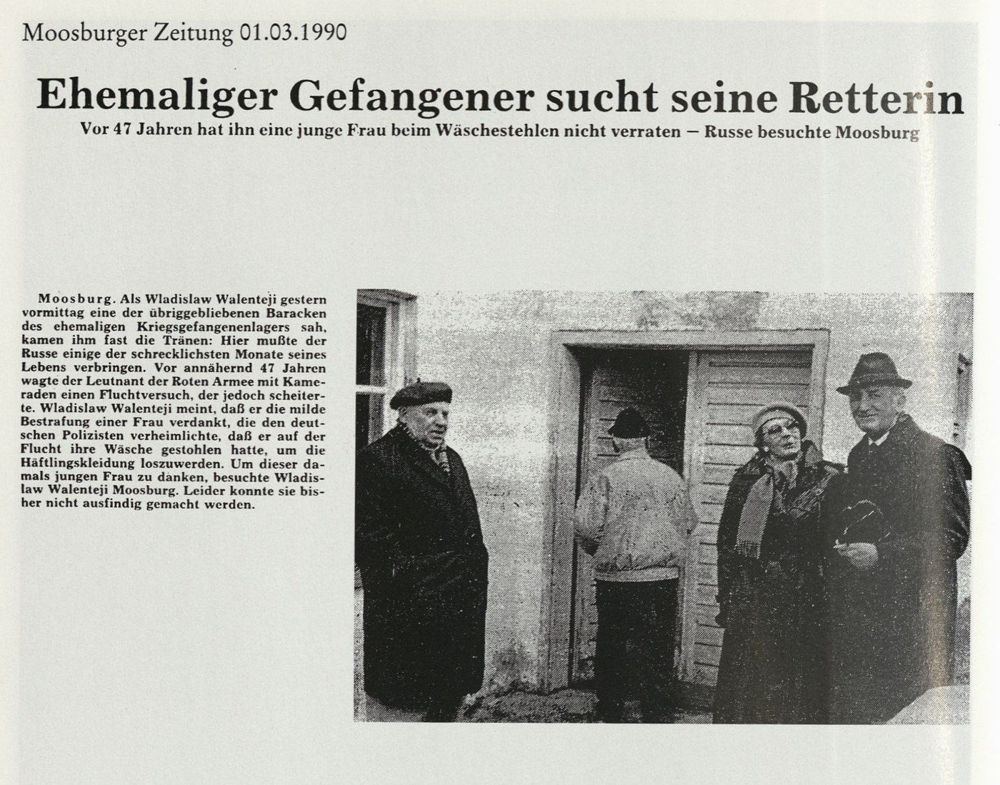
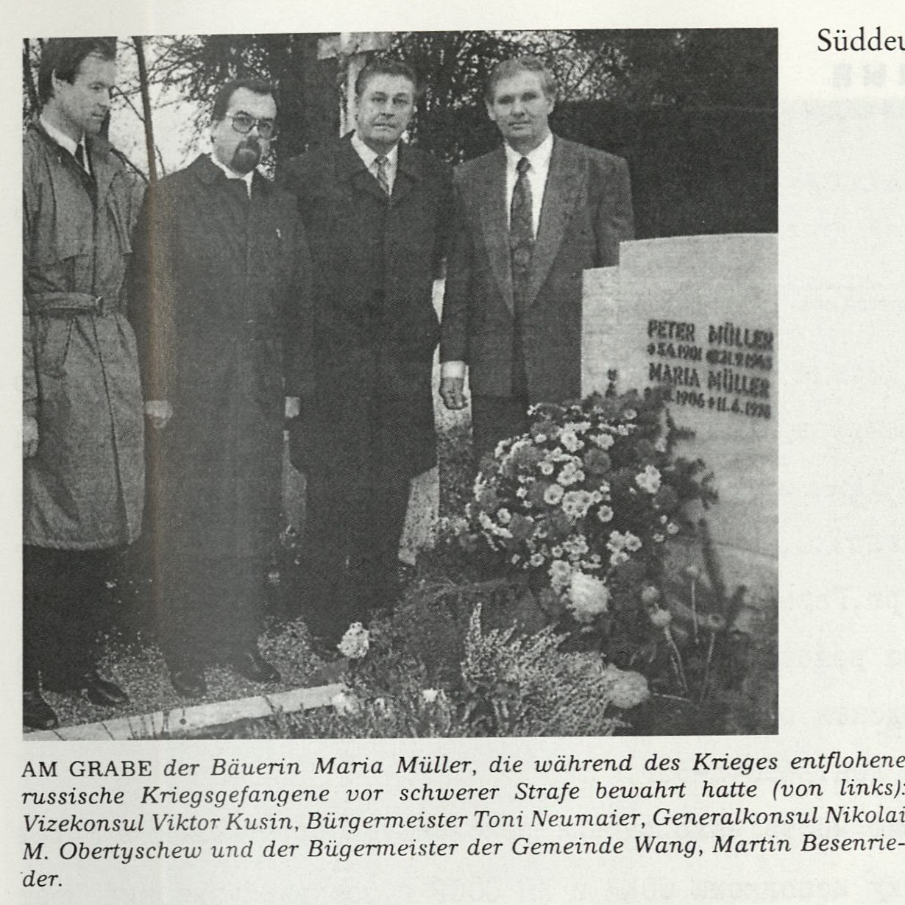
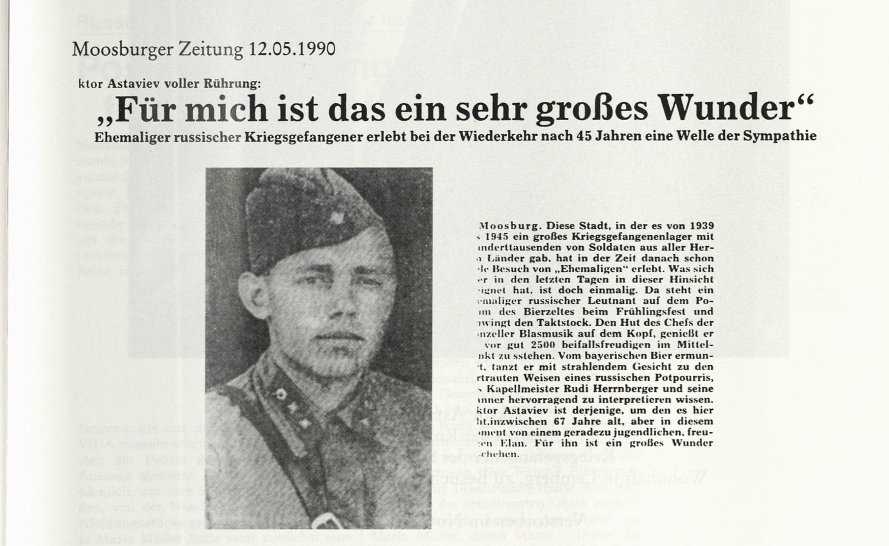
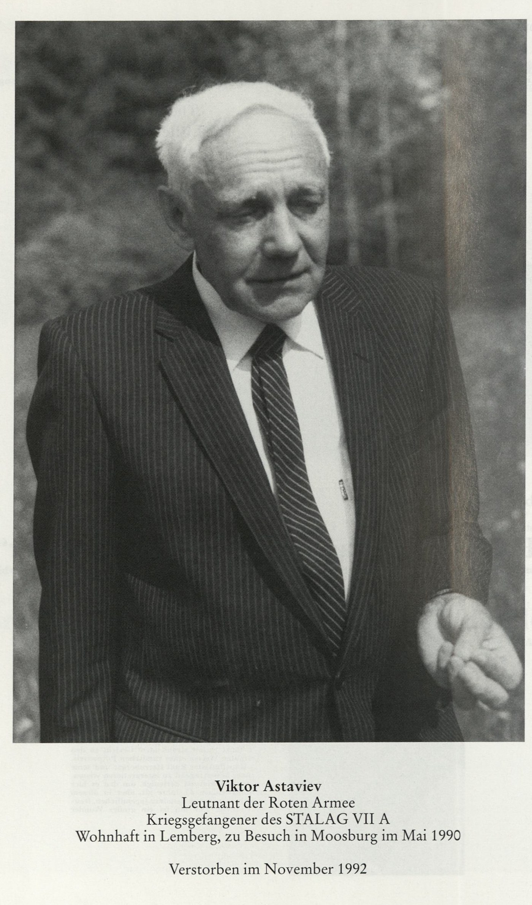
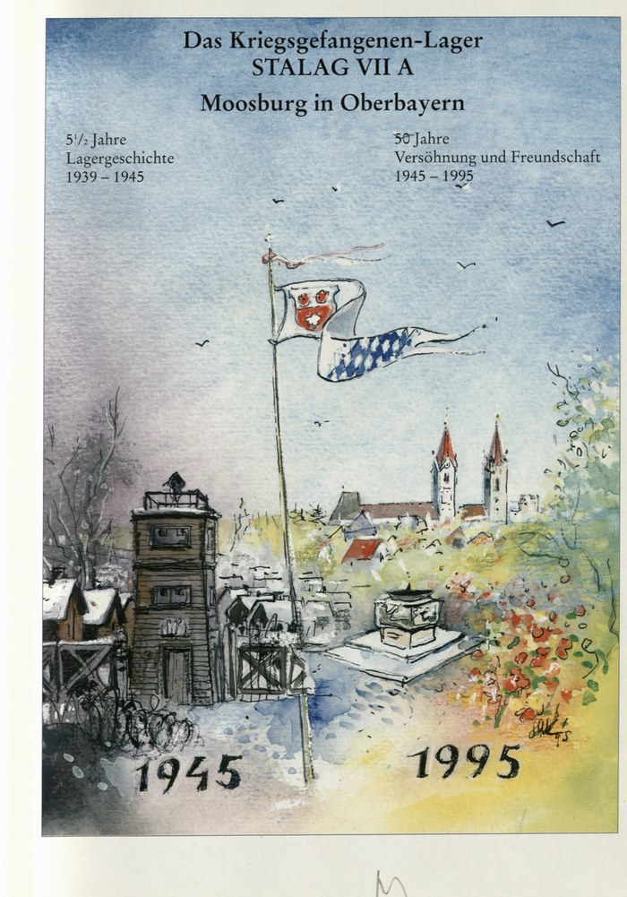

Zeitungsecke · 1990 · Stalag VII A, Moosburg · Шталаг VII A, Мосбург
Заголовок газеты 1990 года: «Ehemaliger Gefangener sucht seine Retterin», то есть «Бывший пленный ищет свою спасительницу».
В марте 1990 года в баварский Мосбург приехал шестидесятисемилетний Владислав Валентей, бывший лейтенант Красной армии. В 1943 году он сидел здесь, в лагере военнопленных Шталаг VII A, бежал, был пойман, и уцелел от тяжёлого наказания только потому, что незнакомая крестьянка солгала полиции ради него. Он приехал сказать ей спасибо. Газета вышла с заметкой о поиске, и её последняя строка была: разыскать женщину пока не удалось. Её нашли через несколько месяцев, но она умерла в 1978 году.

«Moosburger Zeitung» (Мосбургская газета), 1 марта 1990 года. На снимке Владислав Валентей у одного из уцелевших бараков лагеря.
Ehemaliger Gefangener sucht seine Retterin
Vor 47 Jahren hat ihn eine junge Frau beim Wäschestehlen nicht verraten. Russe besuchte Moosburg.
Moosburg. Als Wladislaw Walenteji gestern vormittag eine der übriggebliebenen Baracken des ehemaligen Kriegsgefangenenlagers sah, kamen ihm fast die Tränen: Hier mußte der Russe einige der schrecklichsten Monate seines Lebens verbringen. Vor annähernd 47 Jahren wagte der Leutnant der Roten Armee mit Kameraden einen Fluchtversuch, der jedoch scheiterte. Wladislaw Walenteji meint, daß er die milde Bestrafung einer Frau verdankt, die den deutschen Polizisten verheimlichte, daß er auf der Flucht ihre Wäsche gestohlen hatte, um die Häftlingskleidung loszuwerden. Um dieser damals jungen Frau zu danken, besuchte Wladislaw Walenteji Moosburg. Leider konnte sie bisher nicht ausfindig gemacht werden.
Перевод: «Бывший пленный ищет свою спасительницу. 47 лет назад
молодая женщина не выдала его, когда он крал бельё. Русский побывал в Мосбурге.
Мосбург. Когда Владислав Валентей вчера утром увидел один из уцелевших бараков бывшего
лагеря военнопленных, он едва не расплакался: здесь русскому пришлось провести несколько
страшнейших месяцев своей жизни. Без малого 47 лет назад лейтенант Красной армии вместе с
товарищами решился на побег, который не удался. Владислав Валентей считает, что мягким
наказанием он обязан женщине, скрывшей от немецких полицейских, что во время побега он
украл её бельё, чтобы избавиться от лагерной одежды. Чтобы поблагодарить ту молодую тогда
женщину, Владислав Валентей приехал в Мосбург. К сожалению, разыскать её до сих пор не
удалось».
Группа советских пленных бежала из Шталага VII A. Лагерная одежда выдавала беглецов сразу, поэтому во дворе крестьянки они сняли с верёвки сохнущее бельё и переоделись. Побег сорвался, их поймали. Хозяйка белья, Мария Мюллер, сначала заявила о краже, а потом сказала полиции, что одежда на этих людях ей не принадлежит.
Показание было ложным, и оно решило их судьбу: кража у местных жителей превращала побег в отягчённое дело, а без неё оставался только сам побег. Валентей всю жизнь считал, что уцелел благодаря этой лжи, и через 47 лет приехал сказать спасибо женщине, имени которой не знал.
После публикации в газете имя установили: Мария Мюллер из общины Ванг, соседней с Мосбургом. Она умерла 11 июня 1978 года. Через Москву известили генеральное консульство СССР в Мюнхене.
24 ноября 1990 года генеральный консул Николай М. Обертышев и вице-консул Виктор Кусин приехали в Мосбург и Ванг. В ратуше их принял первый бургомистр Тони Ноймайер, гости оставили запись в Золотой книге города. Вместе с бургомистром общины Ванг Мартином Безенридером они возложили венок на могилу.

AM GRABE der Bäuerin Maria Müller, die während des Krieges entflohene russische Kriegsgefangene vor schwerer Strafe bewahrt hatte (von links) Vizekonsul Viktor Kusin, Bürgermeister Toni Neumaier, Generalkonsul Nikolai M. Obertyschew und der Bürgermeister der Gemeinde Wang, Martin Besenrieder.
Надпись на камне: PETER MÜLLER, ✱5.4.1901, ✝21.9.1943 · MARIA MÜLLER, ✱1906, ✝11.6.1978.
Перевод подписи: «У могилы крестьянки Марии Мюллер, которая во
время войны уберегла бежавших русских военнопленных от тяжёлого наказания (слева направо)
вице-консул Виктор Кусин, бургомистр Тони Ноймайер, генеральный консул Николай М. Обертышев
и бургомистр общины Ванг Мартин Безенридер».
На камне у Петера Мюллера стоит 21 сентября 1943 года, и это в точности сходится с газетой:
она пишет, что он пропал без вести в России с сентября 1943 года. То есть на надгробие
поставили день, когда его видели в последний раз.
Муж Марии Мюллер, Петер, пропал без вести в России 21 сентября 1943 года, эта дата стоит и на камне. Она выгородила русских пленных в тот самый год, когда её собственный муж пропал на их земле. Немецкая газета назвала это иронией судьбы; нам добавить к этому нечего.
Кладбище Friedhof Wang (кладбище общины Ванг) в деревне Volkmannsdorf (Фолькмансдорф), община Wang (Ванг), район Freising (Фрайзинг), Верхняя Бавария, почтовый индекс 85368. Около десяти километров от Мосбурга.
Координаты: 48.4946033, 11.9367556
Открыть на Google Maps ·
Открыть на OpenStreetMap
В той же книге есть снимки Виктора Астафьева, лейтенанта Красной армии и пленного Шталага VII A. В немецкой газете его фамилия набрана как «Astaviev»: так на слух записал её мосбургский корреспондент. К истории Марии Мюллер он отношения не имеет, это отдельный сюжет: он приезжал в Мосбург в мае 1990 года и дирижировал русским попурри на весеннем празднике. Ставим его здесь только потому, что оба снимка из одного собрания и оба о людях, вернувшихся в место своего плена.

«Moosburger Zeitung», 12 мая 1990 года. Вырезка вклеена в книгу 1995 года уже обрезанной: слева от текстовой колонки чистое поле страницы, и первых букв каждой строки в источнике попросту нет. Ниже они восстановлены в квадратных скобках, всё остальное набрано ровно так, как напечатано.
[Vi]ktor Astaviev voller Rührung: „Für mich ist das ein sehr großes Wunder“
Ehemaliger russischer Kriegsgefangener erlebt bei der Wiederkehr nach 45 Jahren eine Welle der Sympathie
Moosburg. Diese Stadt, in der es von 1939 [bis] 1945 ein großes Kriegsgefangenenlager mit [hu]nderttausenden von Soldaten aus aller Her[ren] Länder gab, hat in der Zeit danach schon [vie]le Besuch[e] von „Ehemaligen“ erlebt. Was sich [hi]er in den letzten Tagen in dieser Hinsicht [ere]ignet hat, ist doch einmalig. Da steht ein [ehe]maliger russischer Leutnant auf dem Po[di]um des Bierzeltes beim Frühlingsfest und [sch]wingt den Taktstock. Den Hut des Chefs der [Wa]nzeller Blasmusik auf dem Kopf, genießt er [es,] vor gut 2500 Beifallsfreudigen im Mittel[pu]nkt zu stehen. Vom bayerischen Bier ermun[ter]t, tanzt er mit strahlendem Gesicht zu den [ver]trauten Weisen eines russischen Potpourris, [die] Kapellmeister Rudi Herrnberger und seine [M]änner hervorragend zu interpretieren wissen. [Vi]ktor Astaviev ist derjenige, um den es hier [ge]ht. Inzwischen 67 Jahre alt, aber in diesem [Mo]ment von einem geradezu jugendlichen, freu[dig]en Elan. Für ihn ist ein großes Wunder [ges]chehen.
Перевод: «Виктор Астафьев, растроганный: „Для меня это очень
большое чудо“. Бывший русский военнопленный встречает волну сочувствия, вернувшись через
45 лет.
Мосбург. Этот город, где с 1939 по 1945 год стоял большой лагерь военнопленных с сотнями
тысяч солдат со всего света, и прежде видел приезды „бывших“. Но случившееся здесь на днях
всё же небывалое. Бывший русский лейтенант стоит на помосте пивной палатки на весеннем
празднике и взмахивает дирижёрской палочкой. В шляпе руководителя ванцелльского духового
оркестра он наслаждается тем, что оказался в центре внимания добрых двух с половиной
тысяч охотно аплодирующих зрителей. Ободрённый баварским
пивом, он с сияющим лицом танцует под родные напевы русского попурри, которые капельмейстер
Руди Херрнбергер и его музыканты умеют исполнять превосходно. Виктор Астафьев, это тот, о
ком здесь речь. Ему уже 67 лет, но в эту минуту он полон прямо-таки юношеского, радостного
задора. Для него совершилось большое чудо».


Обложка издания. Акварель д-ра Герды Мадль-Крен, 1995 год.
Источник: «Das Kriegsgefangenen-Lager STALAG VII A, Moosburg in
Oberbayern» (Лагерь военнопленных Шталаг VII A, Мосбург в Верхней
Баварии), издание города Мосбург-на-Изаре, апрель 1995, редактор Антон Ноймайер.
Фотографии: Городской архив Мосбурга. Скан заказан в Баварской государственной библиотеке
(Bayerische Staatsbibliothek, Мюнхен) и получен 18 августа 2026 года.
Права на издание принадлежат городу Мосбург и авторам снимков. Здесь приведены отдельные
вырезки как цитирование с указанием источника; книга целиком не публикуется.
#баварскаябиблиотека
{kind=link}